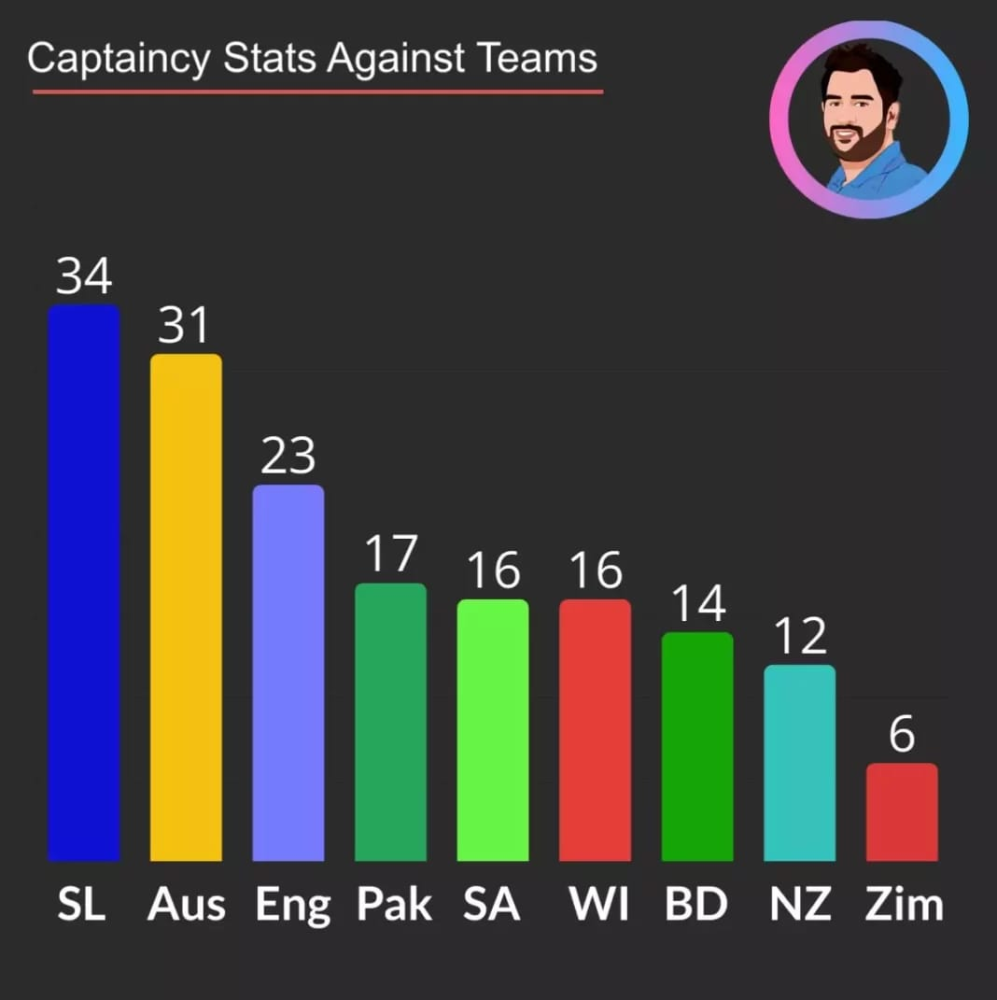
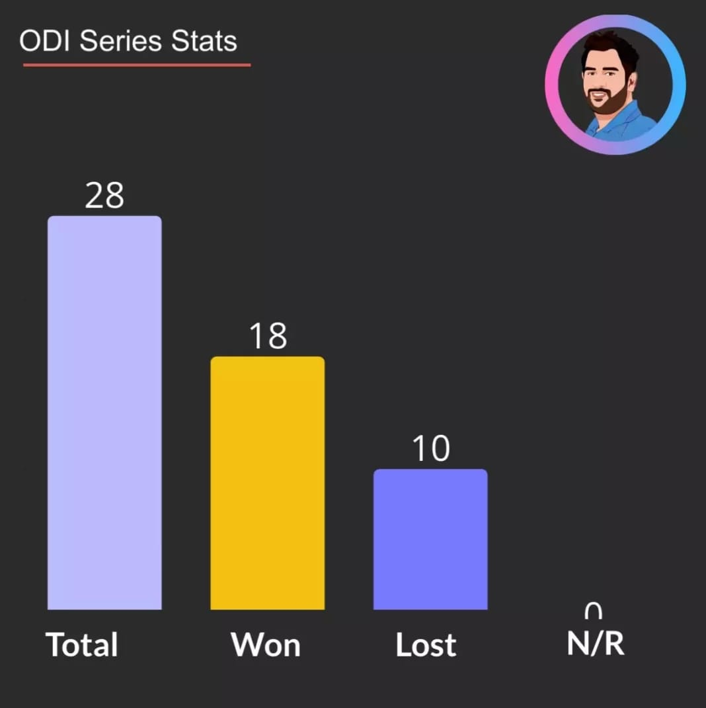
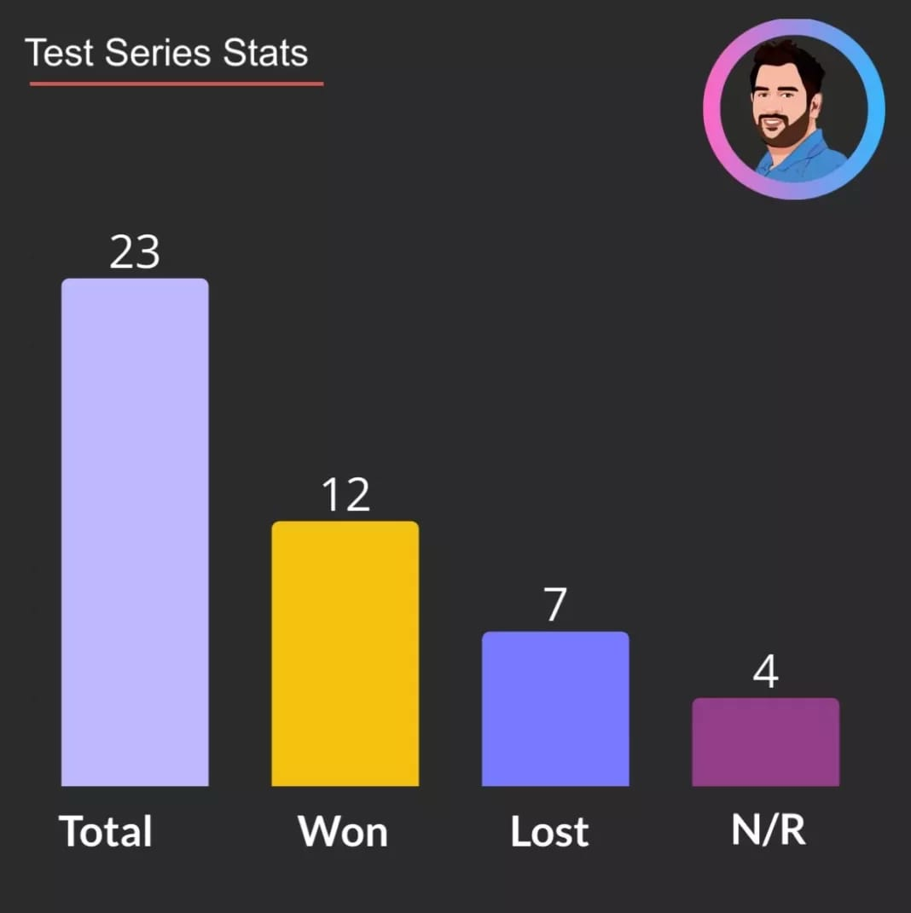
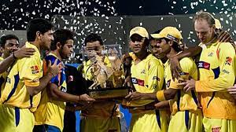
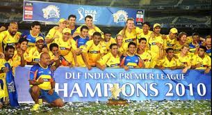
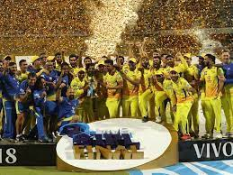
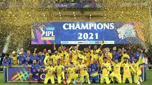
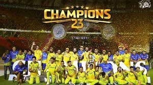
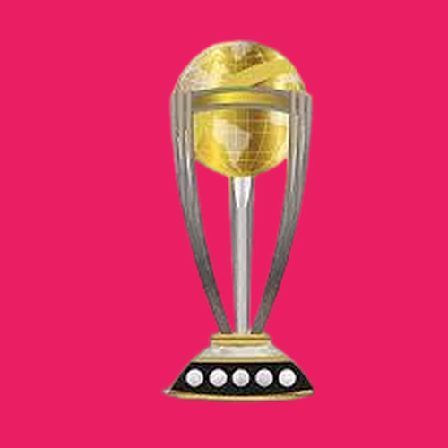

🏆The rivalry that Mumbai Indians vs Chennai Super Kings has become today dates back to 2010 when the two most successful IPL teams battled it out for the ultimate prize in the final. MS Dhoni's CSK became lifted the first of their four IPL titles against Sachin Tendulkar's MI in a fiercely-contested final.

🏆The tournament was won by the Chennai Super Kings for the second successive season defeating Royal Challengers Bangalore by 58 runs in the final in Chennai, with the winning team's Murali Vijay being named Man of the Match.

🏆The 2018 Indian Premier League final was a day/night Twenty20 cricket match played between Sunrisers Hyderabad and Chennai Super Kings, on 27 May 2018
🏆Chennai Super Kings (CSK) is the franchise cricket team based in Chennai, Tamil Nadu, India, which has been playing in the Indian Premier League (IPL) since the first edition of the tournament in 2008. They were one of the eight teams to compete in the 2021 Indian Premier League. The Super Kings have previously lifted the IPL title thrice (in 2010, 2011 and 2018).
🏆The 2023 season was the 16th season for the Indian Premier League franchise Chennai Super Kings. They are one of ten teams that competed in the 2023 Indian Premier League
The side have won the IPL title four times. This team qualified for the final of IPL 2023 for the 10th time. Chennai Super Kings won their 5th IPL Title after defeating Gujarat Titans in the rain affected 2023 Indian Premier League final.

Indias Most Successful Cricket Captain MS Dhoni
✍Dhoni is the only skipper in the cricket world to have won all three ICC trophies-- the ODI World Cup, the T20 World Cup, and the Champions Trophy.
✍ He is also one of the richest cricketers in the world.